ヒーローウォーズ:アライアンス フォリオガイド: 伝説スキルと最強チーム
- 著者: Alexandre Domingos. .
フォリオはヒーローウォーズ:アライアンスでも屈指の破壊力を誇るメイジです。謎の道に属するこの生きた魔導書は、広範囲魔法ダメージ、知力奪取、そして自己複製するインクコピーを備え、あらゆる戦闘でチームの生存力と火力の出し方を根本から変えてしまいます。
このガイドでは、フォリオの伝説レリックスキルの仕組み、最大効果を出すために選ぶべきタリスマン、そしてソムナ、バーナ、エレクトラ、ポラリスのような英雄がなぜ彼を止められない存在へ変えるのかを解説します。フォリオを使い始めたばかりでも、S+ランク級まで育てたい人でも、必要なステータスと計算式をすべて下で確認できます。
下の動画で、ヒーローウォーズ:アライアンスにおけるフォリオのレリックを詳しく確認してください。 技術的な要約とステータス表は動画のすぐ後にあります。

📋 フォリオガイド 目次
ヒーローウォーズ:アライアンスのフォリオとは？
この生きた魔導書にとって知識こそがすべてです。その内に秘めた呪文の力は壊滅的です。フォリオは謎の道に属する最上位クラスの中衛メイジで、巨大な範囲魔法ダメージ、知力操作、そして味方のためのタンク兼エネルギー供給源として機能する独自のインクコピーを軸に設計されています。

- メインクラス: メイジ
- 配置: 中衛
- メインステータス: 知力
- 陣営: 謎の道
- ソウルストーン入手方法: イベント、英雄の宝箱
- 相性の良い英雄: ソムナ、バーナ、エレクトラ、リアン、美雨、ポラリス
- ヒーローティア: S+
- ヒドラティア: A
フォリオは、謎の道を軸にした編成で真価を発揮し、インクコピーは謎の道の味方1人ごとに追加ボーナスを得ます。インクブロットの壊滅的な範囲ダメージ、古代聖典の拘束、知識の呪いの知力奪取、エコーチャントの継続圧力が組み合わさり、彼はゲーム内でもっとも万能かつ危険なメイジの1人となっています。
伝説レリックを強化すると、フォリオはさらに恐ろしい存在になります。インクコピーが彼への全ダメージを肩代わりし、エコーチャントはクリティカル率上昇付きの継続ダメージを重ね、博識は知力が低い敵へのすべてのダメージを常時強化します。知識の呪いのおかげで、その条件はほとんどの敵に対して成立します。
フォリオの長所と短所 - ヒーローウォーズ:アライアンス
✅ 長所
- ✔ 壊滅的な範囲ダメージを持つS+級メイジ。インクブロットは最大で魔法攻撃の200%まで伸び、敵全体を攻撃します。
- ✔ インクコピーはダメージを吸収するタンク分身を生成し、味方へエネルギーを供給し、謎の道編成ボーナスでも強化されます。
- ✔ 知識の呪いはもっとも強力な敵メイジから知力を奪い、相手を弱体化しつつフォリオ自身をさらに強化します。
- ✔ 伝説レリックにより、継続DPSの上昇、ダメージ増幅、そして生存力強化が追加されます。
- ✔ ソムナ、バーナ、エレクトラのような謎の道英雄と非常に高いシナジーを持ち、強烈な編成を組めます。
❌ 短所
- ✖ コーネリウスのような対メイジ英雄や、魔法ダメージを遮断するルーファスに弱いです。
- ✖ インクブロットは5秒のチャージ時間があり、CC持ちの敵に妨害されると効果が落ちます。
- ✖ インクコピーはクールダウンが長く、素早く破壊されると主要な生存手段を失います。
- ✖ 真のS+性能を引き出すには、魔法攻撃、魔法貫通、レリックへの大きな投資が必要です。
フォリオ タリスマン最大ステータス比較
| ステータス | 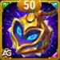 知識のタリスマン |
|
|---|---|---|
 知力 知力 |
18,123 |
16,123 |
 敏捷 敏捷 |
3,325 |
3,325 |
 力 力 |
3,535 |
3,535 |
 体力 体力 |
830,287 |
830,287 |
 物理攻撃 物理攻撃 |
36,581 |
34,581 |
 魔法攻撃 魔法攻撃 |
207,482 |
181,682 |
 物理防御 物理防御 |
21,193.7 |
34,993.7 |
 魔法防御 魔法防御 |
39,628 |
37,628 |
 強靭さ 強靭さ |
1,860 |
8,460 |
 魔法貫通 魔法貫通 |
48,168 |
48,168 |
 魔法クリティカル率 魔法クリティカル率 |
4,473 |
4,473 |
フォリオのタリスマンガイド - ヒーローウォーズ:アライアンス
フォリオには2種類のタリスマンがありますが、戦闘で装備できるのは1つだけです。これはスキンと異なり、スキンボーナスは強化後常時有効ですが、タリスマンボーナスは現在装備しているものだけが適用されます。フォリオの主力スキルは魔法攻撃依存で、役割も純粋な魔法アタッカーなので、どのタリスマンを選ぶかは瞬間火力、生存力、チーム貢献に直接影響します。
知識のタリスマン
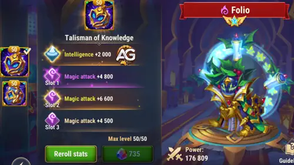
メインステータス枠は知力 +2,000です。知力はフォリオの主ステータスなので、1ポイントごとに魔法攻撃+3、魔法防御+1、物理攻撃+1を得ます。つまり変換だけで魔法攻撃 +6,000、魔法防御 +2,000、物理攻撃 +2,000を得ます。
リロール枠1は魔法攻撃 +6,600、枠2も +6,600、枠3も +6,600。3枠を合計すると、総リロールボーナス = 魔法攻撃 +19,800となります。
|
知識のタリスマン |
合計メインステータス |
|---|---|
|
知力 +2,000 |
+6,000 魔法攻撃 +2,000 魔法防御 +2,000 物理攻撃 |
| 枠1 | 枠2 | 枠3 | 総リロールボーナス |
|---|---|---|---|
|
魔法攻撃 +6,600 |
魔法攻撃 +6,600 |
魔法攻撃 +6,600 |
魔法攻撃 +19,800 |
本の虫のタリスマン
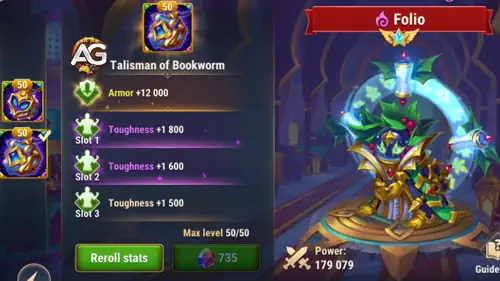
メインステータス枠は防御 +12,000です。これは純粋な防御ステータスで、フォリオの物理防御を大きく高め、物理ダメージ編成やマークスマン相手での生存力を向上させます。
リロール枠1は強靭さ +2,200、枠2も +2,200、枠3も +2,200。合計すると総リロールボーナス = 強靭さ +6,600です。強靭さはフォリオの体力が50%を下回ったとき、受けるダメージ全体を軽減します。
|
本の虫のタリスマン |
合計メインステータス |
|---|---|
|
防御 +12,000 |
+12,000 物理防御 |
| 枠1 | 枠2 | 枠3 | 総リロールボーナス |
|---|---|---|---|
|
強靭さ +2,200 |
強靭さ +2,200 |
強靭さ +2,200 |
強靭さ +6,600 |
戦闘でのおすすめ
Alexandreのヒント: ゲーム序盤では知識のタリスマンが最良の選択です。特にフォリオのグリフが最大化されていない場合や、レリックがまだ十分育っていない場合に有効です。追加の魔法攻撃が全体火力を大きく底上げします。
一方、終盤では本の虫のタリスマンの価値が高まります。フォリオを十分に育成した後は、追加の強靭さが必要な生存力を与え、強敵相手でも耐えやすくなり、PvPとPvEの両方で安定した性能を維持できます。
フォリオ 伝説レリックスキル強化優先度 - ヒーローウォーズ:アライアンス
レリックはフォリオにより高いスケーリングと新たな効果を与えます。このガイドでは各スキルをわかりやすく説明し、何から優先して強化すべきかを示します。
1. インクブロット
敵チーム中央の上空にインクの塊を作り、5.0秒かけて成長した後に落下し、増加していく範囲魔法ダメージを与えます。これはフォリオのアルティメットであり、単体で最も強力なスキルです。チャージ時間が長いほど威力が上がり、知識のタリスマン装備時は 181,585.6 (魔法攻撃207,482の80% + 15,600) から始まり、最終的には 474,964 (魔法攻撃207,482の200% + 60,000) まで伸びます。時限爆弾のようなもので、敵チームには空が落ちてくるまで5秒しかありません。
知識のタリスマン装備時の計算式
- 式1（最小ダメージ）: 魔法ダメージ: 181,585.6 (80% x 207,482 + 15,600)
- 式2（最大ダメージ）: 魔法ダメージ: 474,964 (200% x 207,482 + 60,000)
本の虫のタリスマン装備時の計算式
- 式1（最小ダメージ）: 魔法ダメージ: 160,945.6 (80% x 181,682 + 15,600)
- 式2（最大ダメージ）: 魔法ダメージ: 423,364 (200% x 181,682 + 60,000)
スキルアニメーション情報
- アニメーション遅延: 0.75秒
- 持続時間: 5秒
- 範囲: 120
- 射程: 3000
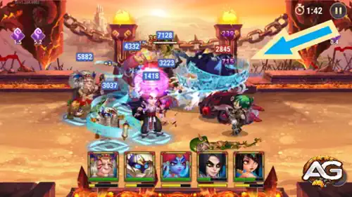
強化優先度: 非常に高い – フォリオの主力ダメージ源であり、広範囲火力の伸びも大きいです。これを強化すると瞬間火力と集団戦への影響力が最大化されます。
1. 古代聖典（インクブロット強化）伝説レリック: レベル10
この伝説強化により、インクブロットはさらに凶悪になります。チャージ中、0.25秒ごとにスキルダメージが増加し、最終ダメージもさらに上昇します。つまり見た目だけでなく威力も加速度的に伸び、最後の一撃がより重くなります。実戦では、敵がフォリオのアルティメットを止められなければ、以前よりはるかに厳しい罰を受けます。
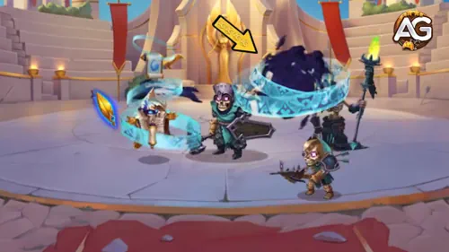
強化優先度: 非常に高い – フォリオ最強のスキルをさらに強化します。チャージ1秒ごとの価値が上がるため、最も影響力の大きい伝説強化です。
2. 古代聖典
近くの敵1体を4.0秒間、古代の文字で覆い、49,896.4 (魔法攻撃207,482の20% + 8,400)のダメージを与えつつ移動不能にします。効果終了時、知識のタリスマン装備なら対象とその周囲の敵に219,482 (魔法攻撃207,482の100% + 12,000)を与えます。これはCCとダメージの複合スキルで、4秒の足止めが重要な敵を拘束し、終了時の爆発が周囲をまとめて罰します。インクブロットの準備や敵陣形の崩しに非常に有効です。
知識のタリスマン装備時の計算式
- 式1（発動時）: 魔法ダメージ: 49,896.4 (20% x 207,482 + 8,400)
- 式2（終了時）: 範囲魔法ダメージ: 219,482 (100% x 207,482 + 12,000)
本の虫のタリスマン装備時の計算式
- 式1（発動時）: 魔法ダメージ: 44,736.4 (20% x 181,682 + 8,400)
- 式2（終了時）: 範囲魔法ダメージ: 193,682 (100% x 181,682 + 12,000)
スキルアニメーション情報
- クールダウン: 9秒
- アニメーション遅延: 1.4秒
- 持続時間: 4秒
- 範囲: 90
- 射程: 3000
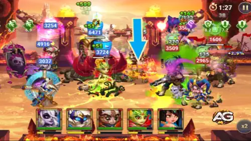
強化優先度: 高い – このCC+ダメージの組み合わせは戦場を支配し、強烈な追撃につなげます。4秒拘束は敵をインクブロット用にまとめておく上で非常に価値があります。
3. インクコピー
味方の前方にインクコピーを生成します。このコピーはフォリオの体力、魔法貫通、魔法攻撃の84%を持ち、謎の道の味方1人ごとに追加ボーナスを受けます。コピーは物理防御と魔法防御が0ですが、攻撃されるたび近くの味方にエネルギー10を与えます。知識のタリスマン装備時、コピーは 697,441体力 (830,287の84%)、174,285魔法攻撃 (207,482の84%)、40,461魔法貫通 (48,168の84%) を持ちます。インクコピーは副タンクであると同時にエネルギー供給源でもあり、敵が攻撃するたび味方はアルティメットをより早く撃てます。
知識のタリスマン装備時の計算式
- コピーの体力: 697,441 (84% x 830,287)
- コピーの魔法攻撃: 174,285 (84% x 207,482)
- コピーの魔法貫通: 40,461 (84% x 48,168)
本の虫のタリスマン装備時の計算式
- コピーの体力: 697,441 (84% x 830,287)
- コピーの魔法攻撃: 152,613 (84% x 181,682)
- コピーの魔法貫通: 40,461 (84% x 48,168)
スキルアニメーション情報
- 初回クールダウン: 4秒
- クールダウン: 32秒
- アニメーション遅延: 1.0秒
- 範囲: 160
- 射程: 3000
- ヒット数: 10
- 1ヒットあたりエネルギー: 10
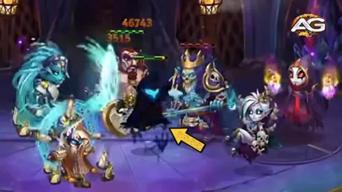
強化優先度: 中〜高 – インクコピーはフォリオの生存とチームのエネルギー供給に重要ですが、DPSへの直接影響はインクブロットや古代聖典ほど即効性はありません。
3. 知識の呪い（インクコピー強化）伝説レリック: レベル20
この伝説強化により、インクコピーは使い捨ての囮から本物の防御盾へと変わります。以後、フォリオの代わりにすべてのダメージを受け、存在している間は回復や強化も可能になります。つまりコピーが立っている限りフォリオはほぼ触れられず、美雨のようなヒーラーがコピーを維持すれば保護時間を大幅に延ばせます。長期戦での生存力を劇的に高める、試合を変える強化です。
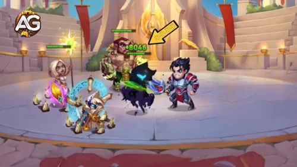
強化優先度: 極めて高い 🔥 – この強化でフォリオはゲーム内でも屈指の耐久メイジになります。すべてのダメージを回復可能なコピーへ流せる点は圧倒的な防御アドバンテージです。
4. 知識の呪い
16.0秒間、もっとも知力が高い敵から 7,784.46 (魔法攻撃207,482の3% + 1,560) の知力を奪います。効果終了時には、すべての敵がその対象へ引き寄せられます。知識のタリスマン装備時、この 7,784.46 の知力は敵メイジから奪われ、そのままフォリオに加算されるため、戦力差を一気に広げます。最後の引き寄せで敵を密集させ、インクブロットや古代聖典を最大効果で当てやすくします。
知識のタリスマン装備時の計算式
- 知力奪取: 7,784.46 (3% x 207,482 + 1,560)
本の虫のタリスマン装備時の計算式
- 知力奪取: 7,010.46 (3% x 181,682 + 1,560)
スキルアニメーション情報
- 初回クールダウン: 1秒
- クールダウン: 12秒
- アニメーション遅延: 1.55秒
- 持続時間: 16秒
- 射程: 3000
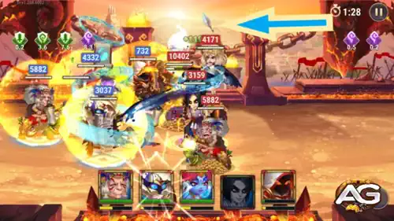
強化優先度: 中 – 知力奪取で敵メイジを弱体化しつつフォリオを強化でき、引き寄せも敵をまとめるのに有用です。ただし、他スキルの純粋なダメージ増加と比べると奪取量自体は控えめです。
5. エコーチャント（新スキル）伝説レリック: レベル1
数秒ごとに呪文を放ち、敵1体へダメージを与えます。発動するたびにクリティカル率とスキルダメージが上昇します。知識のタリスマン装備時の1回あたりダメージは 72,618.7 (魔法攻撃207,482の35%) から始まり、連続発動でさらに伸びます。16秒間で15ヒットするこのスキルは、持続ダメージを積み重ねながらフォリオの魔法クリティカル率を毎回 15% ずつ上げます。撃つたびに危険になる魔法機関銃のようなもので、終盤のヒットでは大きく強化されたクリティカルダメージを叩き込みます。
知識のタリスマン装備時の計算式
- 1回ごとのダメージ増加: 72,618.7 (35% x 207,482)
- クリティカル率増加: 発動ごとに +15%
本の虫のタリスマン装備時の計算式
- 1回ごとのダメージ増加: 63,588.7 (35% x 181,682)
- クリティカル率増加: 発動ごとに +15%
スキルアニメーション情報
- 持続時間: 16秒
- 射程: 3000
- ヒット数: 15
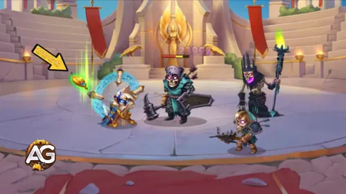
強化優先度: 高い – エコーチャントは多くのメイジに不足しがちな継続DPSを追加します。上昇するクリティカル率はフォリオの他のダメージ源と非常に相性が良く、長期戦ほどフォリオ有利になります。
6. 博識（新スキル）伝説レリック: レベル30
パッシブ効果: フォリオより知力が低い敵に対する通常攻撃とスキルダメージを増加させます。フォリオの知力が相手より高ければ、攻撃とスキルのダメージが 10% 増加します。フォリオは元々知力が高く、知識のタリスマン装備時は18,123に達し、さらに知識の呪いで敵の知力を奪えるため、このパッシブはほぼ常時発動します。つまりインクブロット、古代聖典、エコーチャントを含むフォリオの主要スキルは、多くの戦闘で常に10%増しでダメージを与えます。
パッシブ効果
- ダメージ増加: 知力が低い敵に対して 10%
- 発動条件: フォリオの知力が相手より高いこと
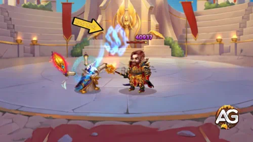
強化優先度: 中〜高 – フォリオのすべての行動に適用される一律10%ダメージ増加は実戦で非常に強力ですが、安定発動には十分高い知力が必要です。知識の呪い発動後はさらに強力になります。
フォリオに最適なスキン - ヒーローウォーズ:アライアンス
各ステータスがフォリオの魔法ダメージ、貫通力、生存力をどう伸ばすかに基づいて、優先して強化すべきスキンを紹介します。
基本スキン
知力 +1,365。知力は1ポイントごとに魔法攻撃+3、魔法防御+1、物理攻撃+1を与えるため、合計で魔法攻撃+4,095、魔法防御+1,365、物理攻撃+1,365となります。フォリオのダメージスキルはすべて魔法攻撃依存なので、このスキンは全攻撃性能を高めつつ魔法耐久も補強します。
強化優先度: 高い – 攻守の両方を伸ばす主ステータススキンです。早めに強化したい候補です。
冬スキン+
魔法貫通 +21,300。Skin+ではボーナスが2倍になり、10,650 x2となります。魔法貫通はメイジにとって極めて重要で、これが不足すると敵の魔法防御に多くのダメージを吸われます。このスキンはインクブロット、古代聖典、エコーチャントが敵防御を貫いて本来の威力を発揮するために不可欠です。Skin+版は通常スキンと同じ消費で2倍のステータスを得られます。
強化優先度: 非常に高い – フォリオにとって最重要級のスキンです。魔法貫通は実ダメージを出すための必須要素なので、最優先候補です。
仮面舞踏会スキン
体力 +106,645。フォリオ自身の生存力を上げるだけでなく、フォリオの84%のステータスを継承するインクコピーの体力も伸ばします。体力が増えるほどコピーは長く耐え、味方へのエネルギー供給も増えます。長期戦では有効ですが、直接火力を上げるわけではありません。
強化優先度: 中 – 生存力とインクコピーの耐久を高めますが、フォリオ本来の役割では火力や貫通系スキンほどの影響力はありません。
太陽スキン
魔法攻撃 +10,650。すべてのダメージ計算式を直接強化します。インクブロット、古代聖典、インクコピー、知識の呪い、エコーチャントのすべてが魔法攻撃依存なので、純粋な攻撃強化としてフォリオ全体の火力を押し上げます。
強化優先度: 高い – 即効性の高い攻撃スキンで、あらゆるスキルのダメージがすぐに上がります。
悪魔スキン
魔法クリティカル率 +2,960。フォリオの魔法攻撃がクリティカルになる確率を上げます。これは発動ごとにクリティカル率を上げるエコーチャントと非常に相性が良く、長期戦で壊滅的なクリティカル連鎖を生み出します。
強化優先度: 中〜高 – エコーチャントの累積クリティカル機構と好相性で、伝説レリックが進むほど価値が上がります。
星界スキン
防御 +10,650。物理ダメージへの耐性を上げます。マークスマンや物理アサシン対策には有効ですが、フォリオのスキル倍率を直接強化するものではなく、純粋な防御寄りです。
強化優先度: 低い – 防御的ですが状況依存です。伝説強化後はインクコピーがダメージを受けるため、生の防御値の優先度は低めです。攻撃系スキンの後回しで十分です。
フォリオのアーティファクト進化優先度 - ヒーローウォーズ:アライアンス
フォリオの壊滅的な範囲魔法ダメージとチーム全体への影響力を最大化するために、どのアーティファクトから優先すべきかを解説します。
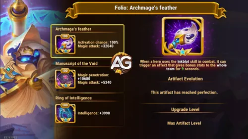
1. 武器アーティファクト: 大魔導師の羽根
魔法攻撃 +32,040。フォリオがアルティメットのインクブロットを使うたび、100%の確率で発動します。9秒間、チーム全体へ大きな魔法攻撃バフを与えます。インクブロットはフォリオの最重要スキルであり、このアーティファクトは確実に発動するため、最優先で強化したい装備です。
強化優先度: 非常に高い – アルティメットで100%発動し、チーム全体を強化し、単体での伸び幅も最大級です。フォリオ運用の中核です。

2. 書物アーティファクト: 虚無の写本
魔法貫通 +10,680、魔法攻撃 +5,340。フォリオにとって重要な2つの攻撃ステータスを同時に与えます。魔法貫通は敵の魔法防御にダメージを吸われないために必須で、追加の魔法攻撃はすべてのスキル計算式を直接強化します。
強化優先度: 高い – 二重の攻撃性能を持つため、2番目に優秀なアーティファクトです。この組み合わせはフォリオに最適です。

3. 指輪アーティファクト: 知力の指輪
知力 +3,990。知力は1ポイントごとに魔法攻撃+3、魔法防御+1、物理攻撃+1を与えるため、合計では魔法攻撃+11,970、魔法防御+3,990、物理攻撃+3,990に相当します。これらの変換値は有用ですが、武器や書物アーティファクトの直接強化よりは伸びが緩やかです。この指輪は博識の発動条件である高知力維持にも貢献します。
強化優先度: 中〜高 – 総合的なステータス強化と博識との相性は良いですが、武器・書物の直接火力強化よりは優先度が下がります。
フォリオのグリフ強化優先度
ヒーローウォーズ:アライアンスでフォリオの壊滅的な魔法火力とチームシナジーを最大化するために、どのグリフから上げるべきかを紹介します。
1. 魔法攻撃グリフ
フォリオの攻撃スキルはすべて魔法攻撃依存です。インクブロットは200%、古代聖典は100%、知識の呪いは3%、エコーチャントは35%、さらにインクコピーもその84%を継承します。このステータスを上げれば、フォリオのあらゆる攻撃行動が強化されます。
レベル80時ステータス: 魔法攻撃 +12,850。
強化優先度: 非常に高い – すべてのダメージスキルを直接強化します。S+級メイジとしての役割の中心です。
2. 体力グリフ
体力が増えるとフォリオ自身の生存力が上がるだけでなく、フォリオの体力の84%を継承するインクコピーにも直接影響します。より硬いコピーは味方へ多くのエネルギーを供給し、フォリオが破壊的な呪文を撃つ時間も稼ぎます。
レベル80時ステータス: 体力 +122,800。
強化優先度: 中 – 生存力とインクコピーの耐久に重要ですが、フォリオの本質的価値はタンク性能ではなくダメージにあります。
3. 魔法防御グリフ
敵メイジ相手での生存力を高めます。魔法防御は知力が自然に与えるステータスの1つでもあり、メイジ中心の環境では、敵の魔法バーストを耐えるために価値が増します。
レベル80時ステータス: 魔法防御 +12,850。
強化優先度: 中 – 防御寄りで対メイジ編成には有効ですが、継続的に強い魔法圧を受ける環境でなければ急ぎではありません。
4. 魔法貫通グリフ
魔法貫通はメイジが実効ダメージを出すための必須要素です。これが足りないと、フォリオのダメージは敵の魔法防御に大きく吸われます。このグリフはインクブロット、古代聖典、エコーチャントが高防御の相手にも計算通りの威力を通しやすくします。
レベル80時ステータス: 魔法貫通 +12,850。
強化優先度: 非常に高い – 攻撃面で必須のグリフです。フォリオは高い魔法攻撃を実ダメージへ変換するために貫通を必要とします。
5. 知力グリフ
知力 +2,110 により、魔法攻撃 +6,330、魔法防御 +2,110、物理攻撃 +2,110 が得られます。変換されるステータス自体は有用ですが、ポイント効率は魔法攻撃グリフや魔法貫通グリフよりやや劣ります。それでも、敵より高い知力を保ちやすくなり、博識の発動補助として重要です。
レベル80時ステータス: 知力 +2,110。
強化優先度: 高い – 幅広くステータスを改善し、博識のパッシブとも相性が良いです。魔法攻撃と魔法貫通の後に上げるのが理想です。
フォリオへの対策 - ヒーローウォーズ:アライアンス
フォリオはS+級メイジですが、明確な弱点もあり、特定の英雄ならそこを突いて封じ込められます。
コーネリウス

コーネリウスは敵チームで最も知力が高い英雄を狙い、純粋ダメージを与えます。フォリオは知識のタリスマンで18,123という非常に高い知力を持ち、さらに知識の呪いで知力を奪うため、コーネリウスはほぼ確実にフォリオを狙い、あらゆる防御を無視する致命的な純粋ダメージを与えます。
ルーファス

ルーファスは魔法無効シールドを展開し、フォリオの魔法ダメージを完全に遮断します。フォリオの攻撃スキルはすべて魔法ダメージなので、ルーファスのシールドがある間はフォリオを一時的に無力化でき、インクブロットの危険なチャージ時間も安全にやり過ごせます。

サトリは敵がエネルギーを得るたび狐火の印を付与します。フォリオのインクコピーは攻撃されるたび周囲の味方にエネルギー10を与えるため、敵のサトリがいると印が高速で蓄積します。印が起爆すると純粋ダメージがフォリオ側のチームに大打撃を与え、エネルギー供給の仕組みそのものが弱点へ変わります。
フォリオのシナジー - ヒーローウォーズ:アライアンス
フォリオは謎の道を軸にした編成で真価を発揮し、インクコピーは謎の道の味方が増えるほど追加ステータスを得ます。ここでは特に相性の良い英雄を紹介します。

バーナは自然の道の英雄で、前衛で受ける性能によりフォリオを守れます。さらに回復とエネルギー補助能力により、インクコピーをより効果的に使いながら、敵をまとめてインクブロットの大範囲ダメージを通しやすくします。

エレクトラは味方へのダメージ肩代わりを強化し、敵の魔法防御をさらに低下させます。彼女のスキルはフォリオのインクブロットや古代聖典と完璧に噛み合い、重なり合うダメージ領域で敵チームを壊滅させます。2人を組ませると、ゲーム内でも屈指の破壊力を持つ魔法コンボになります。

リアンは伝説レリック込みで、魅了CCをフォリオの古代聖典の拘束へ完璧につなげられます。古代聖典が1体を固定している間に、リアンが他の敵を魅了し、敵チーム全体の行動を止める制御連鎖を生みます。これによりフォリオのインクブロットがフルチャージする十分な時間を確保できます。

美雨は敵を盲目にするのが得意で、命中率を大きく下げて被圧を抑えます。この妨害により、フォリオは安全に立ち回りながら大ダメージを出せます。敵の攻撃が外れている間、フォリオは戦場を支配し、インクブロットを十分に育てて敵チームを破壊できます。
さらに、美雨のGift of the Stormバフは、美雨または味方がクリティカルを出すたび魔法貫通を大きく上げます。この効果は5秒ごとに発動でき、フォリオの火力をさらに押し上げ、高耐久相手にもスキルをより致命的にします。

ポラリスはスタンCCと魔法ダメージ圧を提供します。彼女の妨害によって敵英雄は拘束され、フォリオのインクブロットを回避したり妨害したりできなくなります。ポラリスのスタンとフォリオの古代聖典の拘束を組み合わせると、敵チーム全体を制御する強力なCC連鎖が完成します。

ソムナの睡眠CCはゲーム内でも屈指の強力な制御効果で、フォリオと非常に相性が良いです。敵が眠っている間、フォリオのインクブロットは妨害なくフルチャージできます。ソムナ自身も謎の道の英雄であるため、フォリオのインクコピーステータスをさらに36%強化します。この組み合わせはヒーローウォーズ:アライアンスでも最強級の魔法編成を生みます。
フォリオの最強チーム - ヒーローウォーズ:アライアンス
フォリオ向けおすすめ編成
- 美雨, フォリオ, ソムナ, バーナ, サトリ
- 美雨, リアン, フォリオ, バーナ, エレクトラ
- 美雨, ポラリス, フォリオ, バーナ, エレクトラ
- 美雨, フォリオ, ソムナ, バーナ, ジュリアス
- エイダン, フォリオ, ソレイル, テンプス, カイラ
フォリオガイドの結論
フォリオは、壊滅的な範囲ダメージ、強力なクラウドコントロール、知力奪取、独自のインクコピー機構を兼ね備えたS+級メイジであり、ヒーローウォーズ:アライアンスでも屈指の完成度を持つキットです。伝説レリックにより、チャージ型の強化インクブロット、全ダメージを肩代わりする回復可能なインクコピー、エコーチャントの累積持続DPS、博識の常時10%ダメージ増加まで備え、単なる強メイジから圧倒的な破壊者へ変貌します。
最大火力を狙うなら知識のタリスマンを装備し、魔法攻撃グリフ、魔法貫通グリフ、そして冬スキン+を優先して強化しましょう。フォリオはソムナやバーナのような謎の道英雄と組ませることでインクコピーの恩恵を最大化でき、さらに美雨をヒーラーとして加えれば、伝説インクコピーを長時間維持して防御を延ばせます。
フォリオは、レリックへしっかり投資し、タイミングを理解したプレイヤーに大きく応えてくれる英雄です。5秒のインクブロットチャージを使いこなし、インクコピーで本体を守れば、この生きた魔導書は戦場から敵チームを丸ごと消し去ってくれます。
注目ガイドで新たな戦術を学ぼう


ご意見をお聞かせください
このフォリオガイドは役に立ちましたか？ わかりにくかった点や修正してほしい点があれば、Alexandre Games Blogのコメント欄でぜひ教えてください。感想、質問、提案を気軽に共有してください。
下のボタンを押すとコメントを読み込めます。